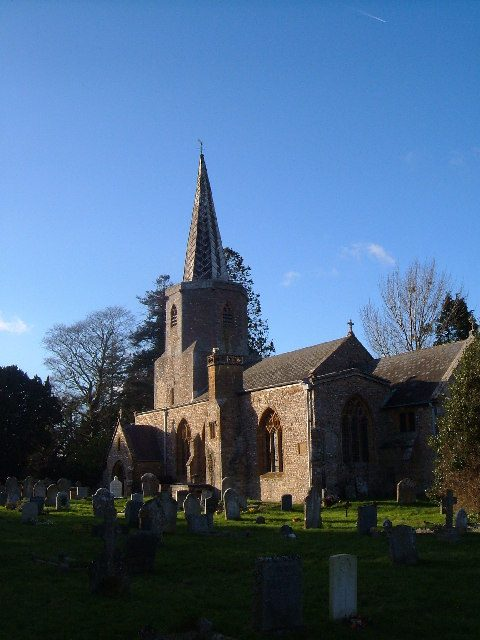
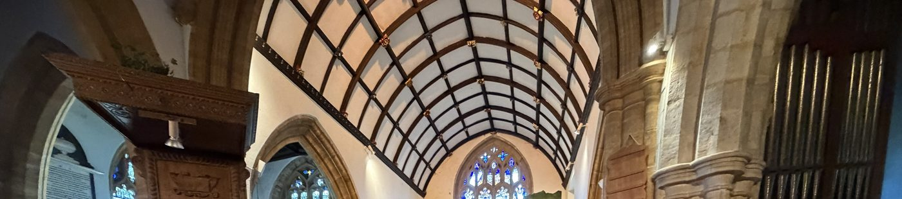
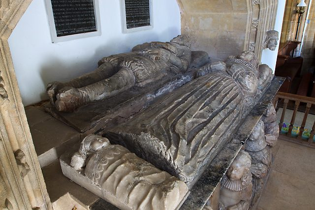

Seven centuries of building
The church was built around 1300, on the site of an older Saxon church, and enlarged in the fifteenth century. It is built of the local grey stone, laid as random rubble, with the windows, doorways and buttresses dressed in golden Ham stone from Ham Hill to the east. The roofs are slate; the spire and the south porch are covered in lead.
The Victorians were thorough with it. In 1869 Sir George Gilbert Scott rebuilt the north aisle, the south porch and the north-west chapel, replaced the clerestory windows and rebuilt the chancel arch. W. D. Caröe restored the chancel in 1937, and the Lady chapel was restored in 1979. What survives untouched is still considerable: the three-bay arcades of clustered shafts, the south arcade's arches still in the original grey sandstone, the fifteenth-century compartment ceiling under the tower, and a handful of early sixteenth-century bench ends among the Victorian ones.
The tower and the leaning spire
The west tower is square for two stages and then becomes an octagon, the change marked by a quatrefoil parapet, and the octagon carries a lead-covered spire. Spires are unusual in this corner of Somerset, where church towers are square and flat-topped, and the spire is the first thing you see of Pitminster from the lanes to the south. It is said to lean. When the village staged its own history as a pageant in 1976, one episode recalled the Great Storm of 1703 that damaged it.

Inside

The oldest thing in the church is the font: fifteenth century, octagonal, cut from Beer stone, its quatrefoil panels carved with St George and St James of Compostela, with a later panel of Christ. The pulpit is early seventeenth century and one of the few in the district to keep its canopy; its sounding board came from the Bluecoat school at Frome and was probably the work of London craftsmen. Either side of the chancel arch are the turrets of the rood stair, a spiral stair that once led to the rood loft of about 1400. The loft itself went at the Reformation, as most did. By the organ is linenfold panelling; over the chancel, a ceiled and ribbed barrel vault.
Fragments of medieval glass survive in the upper lights of the Lady chapel's north window. The rest of the glass is late Victorian and later: the Lady chapel's east window of 1894 and west window of 1904, both by Keape, and the chancel's east window, which had decayed so badly by the 1950s that the church commissioned a new one. Jane Grey's The Calling of Andrew was installed in 1989, with help from American descendants of Pitminster families. It shows Christ calling Andrew from his nets: follow me, and I will make you fishers of men.
The Coles tombs
Three generations of the Coles family, who held the former priory lands at Barton after the Dissolution, lie in the church. Humphrey Coles, who died in 1570, is in the north-west chapel, where his effigy was moved. In the chancel are John Coles (died 1607) with his wife Ann, their monument repainted in 1937, and John Coles (died 1627) with Elizabeth Wyndham (died 1634), an infant lying at her feet. Around them are early nineteenth-century tablets, mostly to the Vibart family, and two hatchments. The brass lectern was given in memory of William Amasa Copp, who died in 1901. In the churchyard, about six metres east of the chancel, the North family monument is listed in its own right.

The American brass

In the church is a brass tablet placed in 1902 by John Harvey Treat of Lawrence, Massachusetts, the family historian who had published The Treat Family nine years earlier. It commemorates Richard Treat, baptised in this church in 1584, who sailed for New England in 1637 and was named in the Royal Charter of Connecticut, and his son Robert, who became governor of that colony. Their story, and the village's other American connections, are told on the Across the water page.
The church today
St Andrew and St Mary is one of the six churches of the Blackdown Benefice, in the Somerset South Deanery of the Diocese of Bath and Wells. There is a Holy Communion service on the fourth Sunday of each month at 10.30am, shared with St Nicholas, Corfe; the benefice's other services move among its churches, and A Church Near You has the current pattern. The vicar is the Revd Jim Fallon, at the Vicarage, Pitminster, telephone 01823 421757.
A medieval church costs money to keep standing, and the parish, not the Church of England centrally, is responsible for it. If you would like to help, the Visit & give page explains how, and where the money goes.